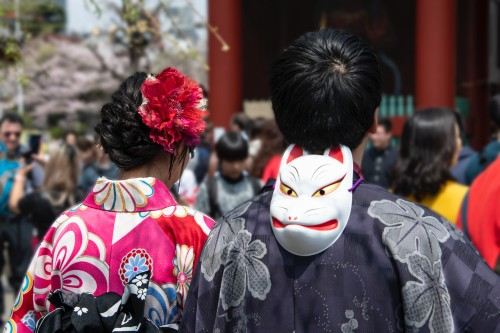
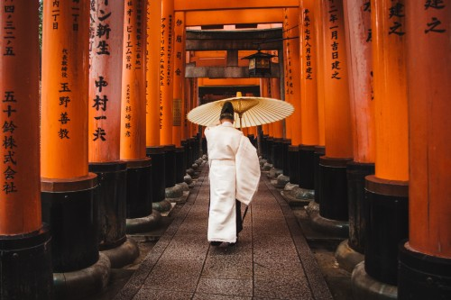
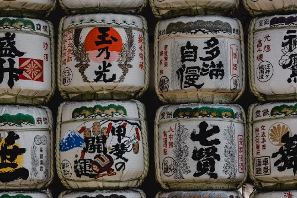

15 de enero de 2021
Calendario de matsuri
Los matsuri o festivales japoneses son uno de los rituales más importantes de la sociedad
japonesa
y uno de los eventos más especiales en los que podemos participar como turistas en Japón.Si
viajas a Japón, seguro querrás añadir un matsuri a tu itinerario. A continuación
te explicamos que festividades...
Leer más...

23 de diciembre de 2020
Que ver y hacer en Kansai
Kansai es la capital espiritual y cultural de Japón, conformada por los imponentes castillos
Osaka e Himeji, jardines zen y arduos caminos hacia la iluminación. Hay muchas cosas que hacer
en la región de Kansai, una variada oferta nocturna, templos y santuarios...
Leer más...

10 de diciembre de 2020
Sake
l sake o nihonshu es una bebida que, por suerte, ha traspasado fronteras. Hoy en día es posible
encontrar sake en muchos restaurantes fuera de Japón y en muchas tiendas. Sin embargo, al
contrario de lo que muchas veces se pensaba fuera de Japón antes de que...
Leer más...